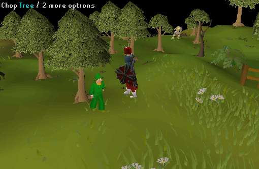
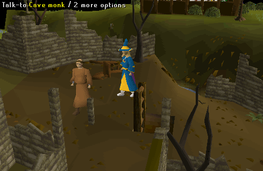
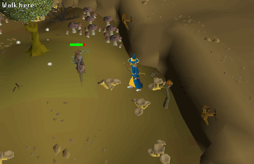
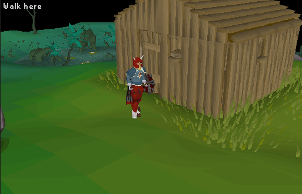

Lost City
Description: Legends tell of a magical lost city hidden in the swamps. Many adventurers have tried to find this city, but it is proving difficult. Can you unlock the secrets of the city of Zanaris?Difficulty: Experienced
Length: Long
Items & Skills Needed:
- 31 Crafting
- 36 Woodcutting
- Ability to kill a level 101 Tree spirit with limited armour and weapons (can be safespotted)
Reward: 3 Quest points, access to Zanaris, the ability to wield the Dragon Longsword and Dragon Dagger
Instructions:
Head to the forest south of Draynor untill you find several characters gathered around a campfire. Several of them won't talk to you, however the Warrior will. Trick him into revealing why they are camping here and what they are looking for. He tell you to find the tree a leprechaun is hiding in.

Directly west of the camp are a bunch of trees. Look for a tree that has the option "chop tree" instead of "chop down tree". When you attempt to chop it a leprechaun called Shamus will flee out of it. Run after him and ask him how you can find Zanaris. He'll tell you that you need a Dramen staff to enter the city.

Prepare yourself at Draynor bank for the fight with a level 101 spirit without armor or a weapon. Bring good food and runes or jewellery to teleport; otherwise you will have to teleport to level 32 wilderness.
You can also bring crafting materials to create leather armor. Other supplies depend on whether you will be using melee/magic/ranged.
Melee: Prayer potions
Magic: Runes for strike/bolt/blast/wave spell or crumble undead
Ranged: Arrows, unfinished bow, and bowstring
Armor and items allowed on Entrana includes: jewellery, capes, robes, hats, potions, and a knife.
Head to Port Sarim and talk to the Monks of Entrana to travel to Entrana (you will be searched). They will only take you to Entrana if you have no weapons or armour with you.
Once on the Island go northeast to the bridge. Cross it and head west to the ladder. A Cave monk will warn you that once you go down the ladder, you can't go back up. The only exit will bring you to level 32 of the wilderness just north of the Boneyard.

Go down the ladder and kill zombies (level 25) until you get a Bronze axe.
Run past the Greater demons (level 92) into the room south of them. If you have a high combat level and plan on using melee on the spirit, you could kill Greater demons (level 92) to get better weapons and armor. When you attempt to cut down the Dramen tree a Tree spirit (level 101) will pop up, which you have to kill in order to cut branches from the tree.

Strategy:
Melee: Wield the bronze axe, drink a Prayer potion if needed, and turn on "Protect from Melee".
Ranged and Magic: There is one safe spot in the room.

Once you have killed the Tree spirit, chop the Dramon tree to get a Dramen branch. Use a knife on the branch to make the "Dramen staff".
Teleport out or head into the room with the Greater demons to use the Magic door that brings you to level 32 of the wilderness just north of the Boneyard.

Congratulations, Quest Complete!

This quest guide was written by Gnat88, Galalad, and Alfawarlord. Thanks to Jakesterwars, Lilroo503, and Khaaveren for corrections.
This quest guide was entered into the RuneHQ database on Tue, Mar 02, 2004, at 10:24:00 PM by Wiz-Master and CJH and was last updated on Thu, Oct 25, 2007, at 08:26:39 AM by Jakesterwars.